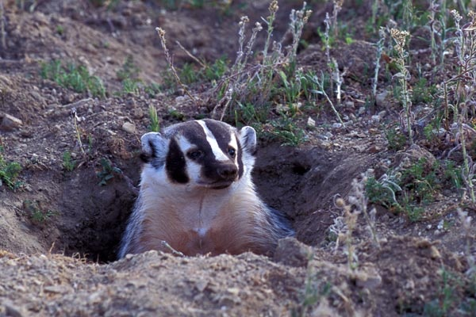

Vart lever grävlingen?
Grävlingen trivs bäst i blandskog, lövskog och öppna landskap med tillgång till både skog och äng. Den behöver mark som är lätt att gräva i, helst sandig eller lerig jord. De är väldigt revirbundna och spenderar majoriteten av sitt liv i samma terratorium, förflyttningar och spridningsmönster sker om det är kritiskt som till exempel röjning av skog och träd.
I Sverige finns grävlingen i nästan hela landet utom i de allra nordligaste delarna. Den undviker höga fjäll och mycket täta granskogar, Trots att dem oftast undviker fjäll så har dem möjligheten att anpassa säg för omständigheterna.
Grävlingsgryt
En grävlingsgryt kan vara mycket stor. Den har flera kamrar och tunnlar som kan vara över 20 meter långa. Grävlingarna håller rent i borgen och byter ofta sovplats mellan olika kamrar. Grävlingsgryten är anpassad och placerad för överlevnad, belagda systematiskt för att både kunna överleva och underhålla gryten.

Om du vill se grävlingar i naturen är kvällstid den bästa tiden, särskilt under sena sommarkvällar när de kommer ut för att leta mat.